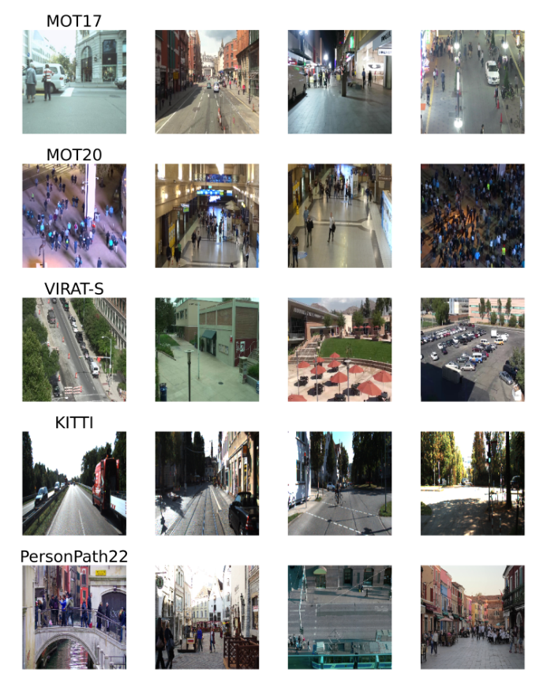
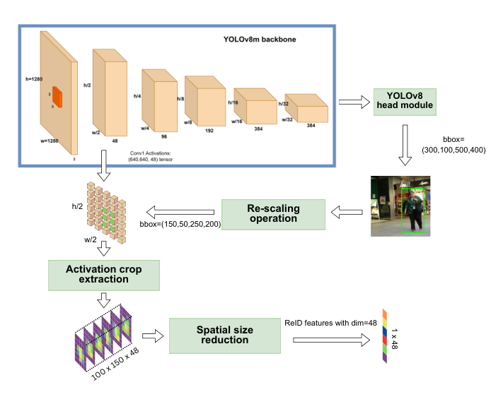

LITE: Efficient ReID Integration for Real-Time Multi-Object Tracking
LITE integrates ReID feature extraction into real-time multi-object tracking to reduce tracking overhead while preserving competitive accuracy. [PDF p. 1]
Executive Summary
HumbleBee R&D supported and funded the research behind LITE, a tracking approach aimed at teams and researchers who need to follow objects consistently through video while keeping processing practical for real-time use. Rather than requiring a separate ReID inference path, LITE extracts appearance features within a detector-and-tracker pipeline. The paper reports benchmark results, not a client deployment or measured business outcome; production availability is not established by the supplied material. [PDF p. 1] [PDF p. 1] [PDF p. 14]
The source paper is “LITE: A Paradigm Shift in Multi-Object Tracking with Efficient ReID Feature Integration,” by Jumabek Alikhanov, Dilshod Obidov and Hakil Kim. The supplied document is identified by arXiv preprint number 2409.04187; a publication venue or publication date is not provided in the supplied material. Read the arXiv preprint and visit the project code page (the paper says code will be available post-publication; its current availability is not confirmed here). [PDF p. 1] [PDF p. 1]
Context and Challenge
Multi-object tracking (MOT) systems maintain identities across video frames. Applications described in the paper include surveillance, autonomous driving and sports analytics, where timely tracking can matter. In ReID-based tracking, systems must associate objects despite changes in lighting, pose, occlusion and camera angle. [PDF p. 1]
The challenge is that conventional ReID-based trackers can incur additional model-training, inference and processing costs. The paper also identifies evaluation practices that may not reflect practical deployment: reported speed can measure only the matching and track-management stage, even though total frame time depends on factors such as detector complexity, image resolution, detection density and confidence threshold. This makes it difficult to compare tracker speed under realistic, consistent conditions. [PDF p. 1] [PDF p. 3]
The research evaluates video-tracking benchmarks across different environments, including crowded pedestrian scenes and vehicle or general surveillance footage. The paper lists MOT17, MOT20, PersonPath22, KITTI and VIRAT-S among its evaluation datasets; these are research test settings, not evidence of deployment for a particular customer. [PDF p. 11]

Solution and Capabilities
LITE (Lightweight Integrated Tracking-Feature Extraction) incorporates appearance-feature extraction into the tracking pipeline, using standard CNN-based detectors such as YOLOv8m. Instead of running a separate ReID model inference and its associated preprocessing and post-processing, the approach derives features from detector activations. The paper presents LITE as a paradigm that can be applied to multiple ReID-based trackers; it reports implementations for DeepSORT, DeepOC-SORT and BoTSORT. [PDF p. 1] [PDF p. 2] [PDF p. 14]
Integrated appearance features
The detector’s feature activations are cropped and spatially reduced to form ReID features, enabling appearance-based association without a separately trained ReID model or separate ReID inference. [PDF p. 6] [PDF p. 14]
The paper’s simplest implementation, LITE:DeepSORT, applies the paradigm to classic DeepSORT; it also reports LITE versions of DeepOC-SORT and BoTSORT. [PDF p. 2] [PDF p. 14]

Evaluation designed around practical speed
Alongside the LITE method, the paper proposes a broader evaluation framework for tracking-by-detection. It argues for measuring tracker pipelines with readily available pre-trained detectors and accounting for detector and input settings, rather than timing only tracker updates. This helps practitioners interpret speed and accuracy together under the stated evaluation conditions. [PDF p. 3] [PDF p. 2]
Results and Business Impact
The paper reports benchmark-level performance improvements; these are technical results, not measured business outcomes. Its abstract reports the following for the simplest LITE:DeepSORT implementation: [PDF p. 1]
On MOT17, a HOTA score of 43.03% at 28.3 FPS. [PDF p. 1]
The abstract describes LITE:DeepSORT as twice as fast as DeepSORT on MOT17 and four times faster on the more crowded MOT20 dataset, while maintaining similar accuracy. [PDF p. 1]
Across LITE:DeepSORT, LITE:DeepOC-SORT and LITE:BoTSORT, the conclusion reports speedups of 2–10 times over their original counterparts while maintaining similar HOTA scores. [PDF p. 14]
Experiments across MOT17, MOT20, PersonPath22, KITTI and VIRAT-S report that the LITE variants maintained competitive tracking accuracy with a speed advantage; the paper notes the advantage is especially evident in crowded MOT20 scenarios. [PDF p. 11]
These FPS and HOTA figures describe benchmark evaluations. The supplied sources do not report a measured reduction in operating cost, a customer deployment outcome or a quantified business impact. [PDF p. 1] [PDF p. 11]
Limitations and Next Steps
LITE is documented as a research paradigm and evaluated in the paper. The supplied material does not establish a production release, customer integration, supported deployment platform, edge-device performance or current code availability. Although the paper says code will be available post-publication, the source excerpts do not confirm whether that release has occurred. [PDF p. 1] [PDF p. 14]
The authors identify future work to apply LITE to additional ReID-based trackers, investigate when ReID components are useful across scenarios, and evaluate LITE-enabled trackers on edge devices. These are planned research directions, not capabilities or results demonstrated as complete in the supplied material. [PDF p. 14]
Conclusion
LITE addresses the compute overhead associated with ReID-based multi-object tracking by integrating appearance-feature extraction into the tracking pipeline. The paper supports this approach with benchmark results and a broader evaluation framework, while leaving deployment status and business impact unreported. It offers a research-backed direction for making ReID-equipped tracking more efficient, with further validation and implementation work still needed for specific use cases. [PDF p. 14] [PDF p. 1]